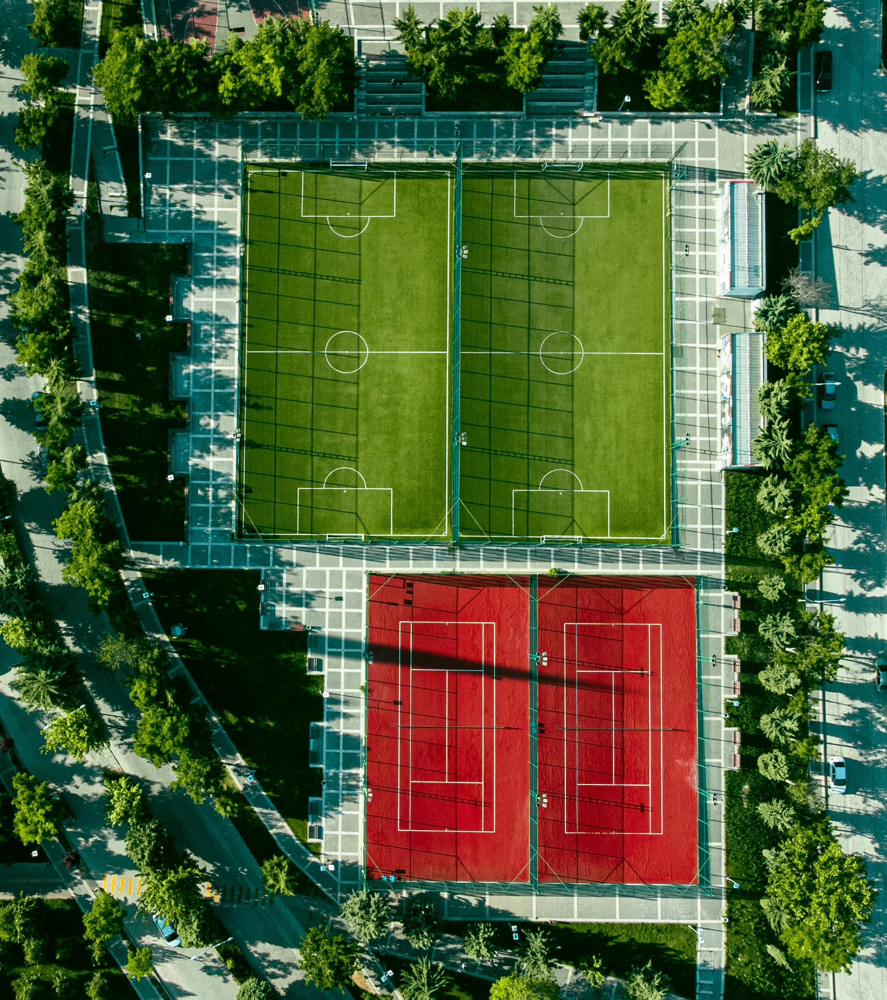
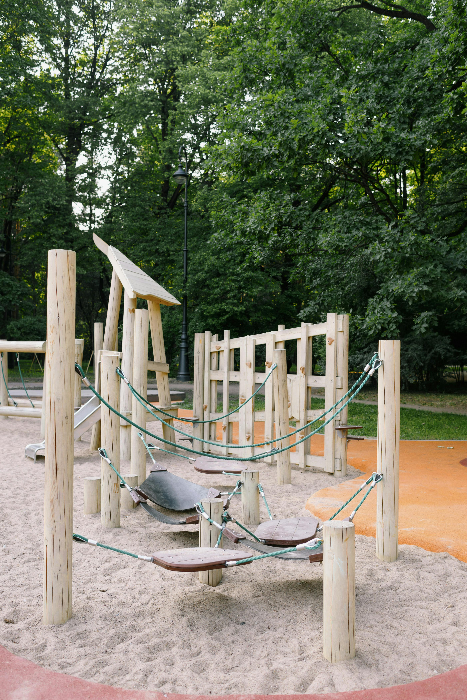
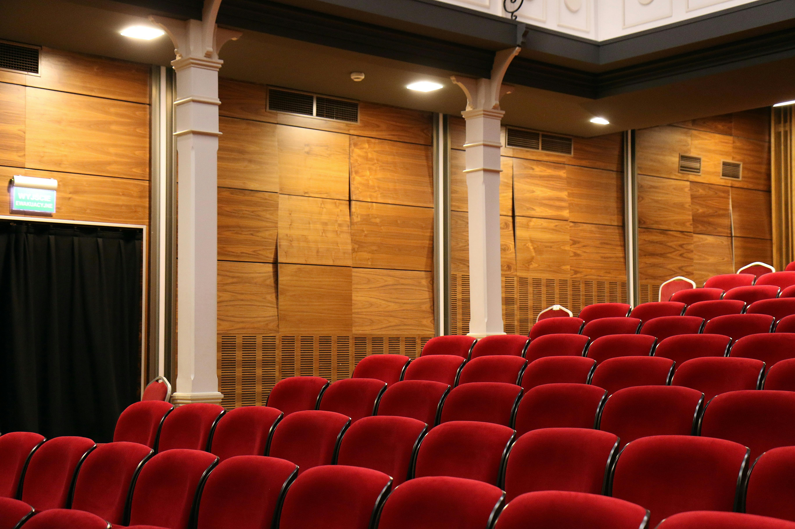

Nova Crest International School stands as a beacon of excellence in education, committed to nurturing the minds of future leaders. At Nova Crest, we believe in providing a holistic learning experience that balances rigorous academics with extracurricular activities, ensuring the comprehensive development of each student. Our school is renowned for its state-of-the-art facilities, innovative teaching methods, and highly qualified faculty who are dedicated to fostering a love for learning in every student. The curriculum is designed to challenge and inspire, promoting critical thinking, creativity, and problem-solving skills. At Nova Crest, we emphasize the importance of community and global citizenship. Students are encouraged to participate in various cultural, sports, and community service activities, promoting a well-rounded education that prepares them for the challenges of the modern world. The school's diverse and inclusive environment ensures that every student feels valued and supported. With a focus on personalized learning, Nova Crest provides opportunities for students to excel in their unique talents and interests, preparing them for success in higher education and beyond. Whether in the classroom, on the sports field, or in the community, Nova Crest International School is committed to excellence, integrity, and the lifelong success of its students.
Classrooms:
Equipped with the latest educational technology, our classrooms provide an interactive and engaging learning environment. Smartboards, projectors, and individual learning stations help facilitate a comprehensive education experience.
Science and Computer Labs:
Our science laboratories are outfitted with advanced equipment to support practical learning in physics, chemistry, and biology. The computer labs have up-to-date software and hardware to teach students essential digital skills.
Library and Media Center:
The library boasts an extensive collection of books, journals, and digital resources. The media center provides access to computers and the internet, supporting research and independent study.
Sports Facilities:
Our school offers a wide range of sports facilities, including a swimming pool, tennis courts, soccer fields, and a fully equipped gymnasium. These facilities promote physical fitness and teamwork among students.

Arts and Music Studios:
Dedicated spaces for visual arts, music, and performing arts encourage students to explore their creative talents. These studios are equipped with the necessary tools and instruments for various artistic endeavors.
Cafeteria and Dining Hall:
The cafeteria provides nutritious and balanced meals prepared by professional chefs. The dining hall is a spacious and hygienic area where students can enjoy their meals.
Playgrounds and Recreational Areas:
Safe and well-maintained playgrounds and recreational areas allow students to relax, play, and interact with their peers.

Auditorium:
A large auditorium with modern audiovisual equipment hosts school events, assemblies, and performances. It is designed to accommodate a large audience comfortably.

Health and Wellness Center:
The school has a health center staffed with qualified nurses and counselors who provide medical care and support students' mental well-being.